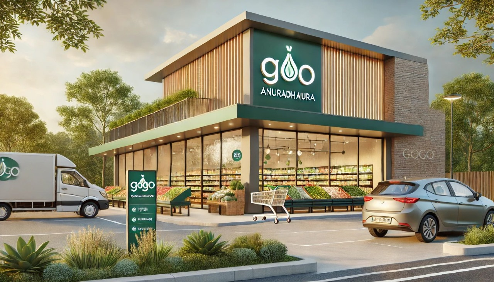
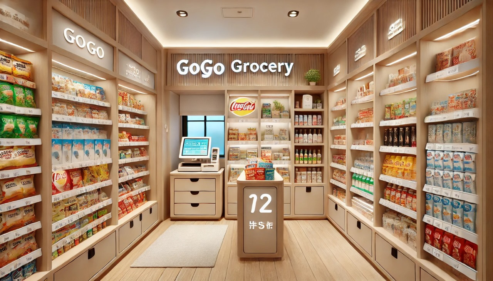
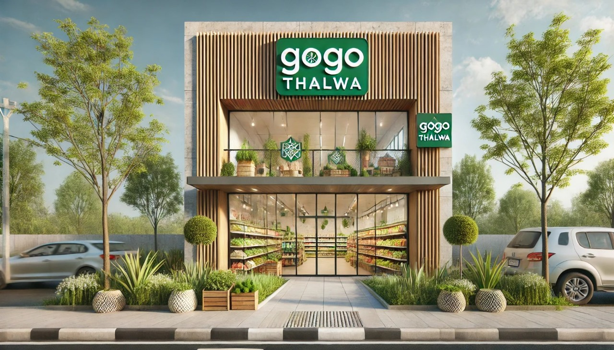
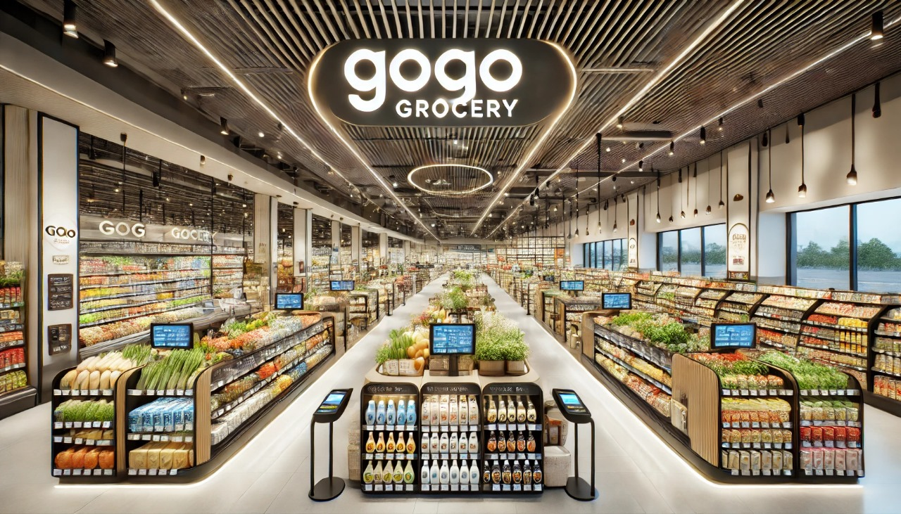
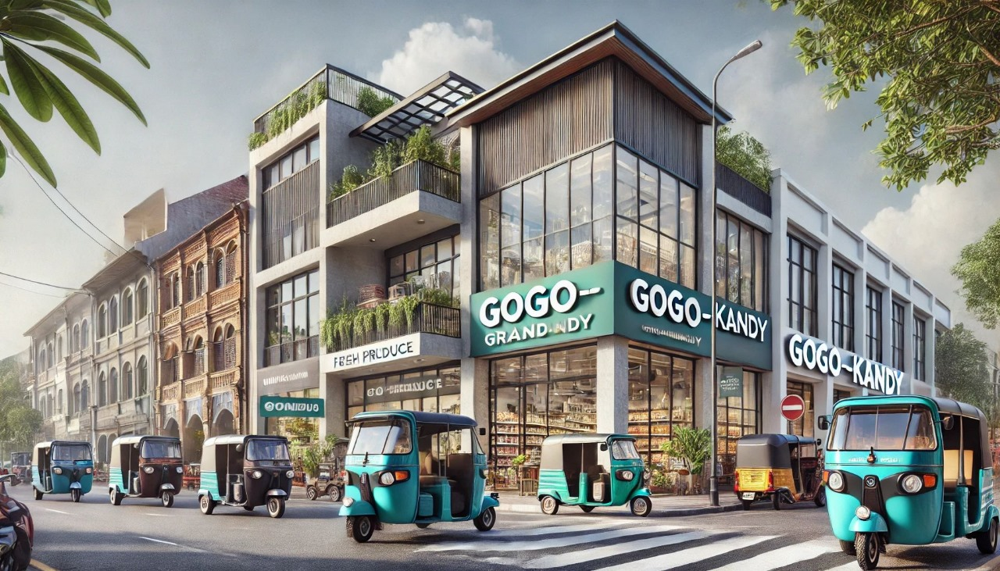
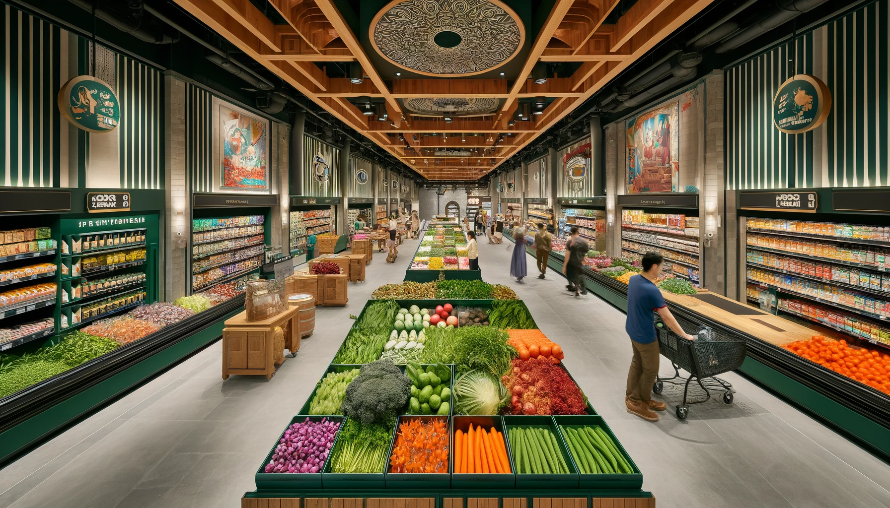

Our main branch and head office are located in Anuradhapura, offering a wide range of fresh products. Enjoy fast delivery services around the Anuradhapura area for your convenience.
 Visit our Thalawa branch for the same variety of fresh items available in Anuradhapura provide efficient all-island delivery to ensure your groceries reach you wherever you are.
 The Kandy branch offers the full range of products, just like our Anuradhapura and Thalawa branches. Benefit from our reliable all-island delivery service to get your groceries quickly.
 